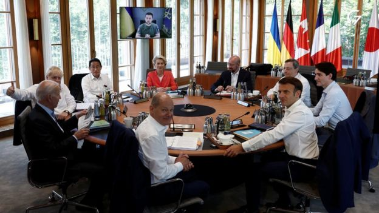
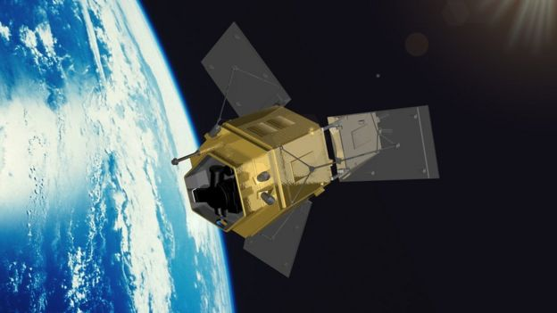

Summary
Turkey has agreed to support Finland and Sweden's Nato membership applications
Finland's president says the breakthrough came after the three countries signed a joint memorandum after meeting at the Nato summit in Madrid
Nato leaders will formally invite Finland and Sweden to join the alliance tomorrow, Nato chief Jens Stoltenberg says
Meanwhile, world leaders at the summit are expected to approve plans to increase the number of troops on high alert
It comes after G7 leaders set out fresh measures against Russia during a separate summit in Germany
agreed to work on a price cap for Russian oil, push for a ban on gold imports and they called on countries not to stockpile food
In Ukraine, rescuers have stopped searching for survivors after the missile strike on the shopping centre in Kremenchuk that killed at least 18 people
Ukraine war: G7 pledges to stay with Ukraine until the end

Leaders of the world's seven richest nations have promised to support Ukraine "for as long as it takes" on the second day of a summit in Germany.
In a statement, the G7 group also said that Russia must stop blocking food from leaving Ukraine's ports.
Addressing the summit via video-link, Ukraine's president appealed for more heavy weapons from Western allies.
G7 leaders are under pressure to be united in their approach against increasing Russian aggression.
"We will continue to provide financial, humanitarian, military and diplomatic support and stand with Ukraine for as long as it takes," they said in a strongly worded statement on Monday.
Covid vaccines are being rolled out to US children under 5
Moderna and Pfizer Covid vaccines - in smaller doses - are now available to about 17 million children in the US after the shots received the greenlight for young children from the Centers for Disease Control and Prevention over the weekend.
While some parents are eager to finally get their children vaccinated against Covid-19, others are more hesitant about the jab.
UK-built Forum satellite will measure greenhouse effect
28 June, 2022
Jonathan Amos
@BBcAmos

The Forum satellite will be assembled by aerospace giant Airbus at its factory in Stevenage.
It will monitor far-infrared radiation coming up from our planet's surface.
It's this particular type of light that makes molecules of gases such as carbon dioxide and water vapour vibrate, leading to a heating of the atmosphere - a key aspect of climate change.
Forum is an Earth observation mission of the European Space Agency (Esa). Its procurement contract with Airbus is worth €160m (£140m).
January 6 hearings: Trump urged armed supporters to storm Capitol - aide
By Sam Cabral BBC News, Washington
28 June,2022
Donald Trump knew supporters had weapons when he urged them to storm the Capitol to overturn the 2020 election, a former White House aide has said.
Ex-aide Cassidy Hutchinson testified to the committee probing the 6 January 2021 riots that Mr Trump and his top staff knew the potential for violence.
But a planned rally went ahead, with Mr Trump saying the armed attendees were "not here to hurt me".
The president also demanded to join the march on the Capitol himself, she said.
In a series of public hearings, the Democratic-led 6 January committee has sought to link the former president directly to the efforts to prevent Congress from certifying the 2020 election results.